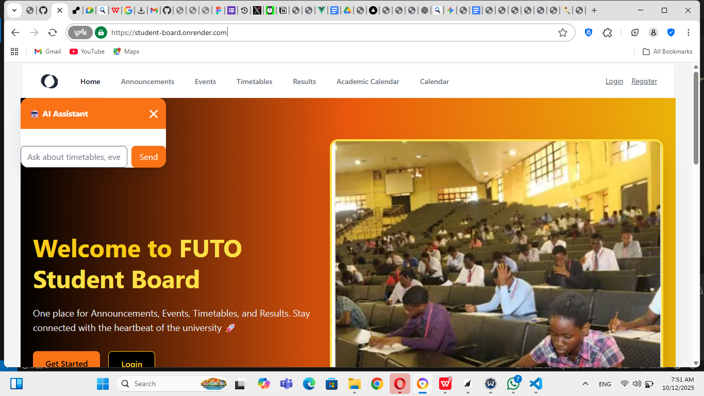
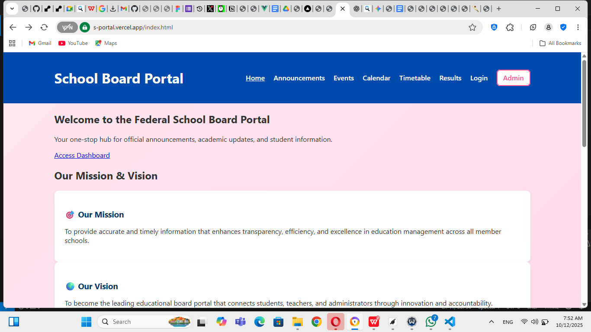

Designed and developed a modern, responsive landing page for an AI technology company. The goal was to create an engaging and professional online presence that effectively communicates the company's brand and services. The site features animated elements, detailed service showcases, and highlights of their key products to capture user interest.

Technologies Used
Code Snippet
Here's a snippet of code I'm particularly proud of. It demonstrates a complex feature or a clean implementation of a specific algorithm.
// Example Vue component
const atomRef = ref(null)
onMounted(() => {
gsap.to(atomRef.value, {
rotation: 360,
duration: 20,
repeat: -1,
ease: 'linear',
transformOrigin: '50% 50%',
})
})
const cards = [
{
icon: mlIcon,
text: 'Machine learning allows AI systems to improve over time — just like we learn from experience.',
position: 'md:top-0 md:left-[150px]'
},
{
icon: dataIcon,
text: 'AI analyzes huge amounts of data in seconds, helping businesses make faster, smarter decisions.',
position: 'md:top-[80px] md:left-[360px]'
},
{
icon: smartphoneIcon,
text: 'From your smartphone keyboard to Netflix recommendations — AI is behind many tools you use daily.',
position: 'md:top-[220px] md:left-0'
},
{
icon: customIcon,
text: 'AI isn’t one-size-fits-all — businesses can build tailored models that solve their specific challenges.',
position: 'md:top-[220px] md:left-[420px]'
},
{
icon: industryIcon,
text: 'AI is revolutionizing healthcare, finance, education, agriculture, and beyond.',
position: 'md:top-[350px] md:left-[210px]'
}
]FUTO Student-Board
A web application designed to serve as a digital bulletin board for students. It facilitates the sharing of information, announcements, and resources within an educational institution, creating a centralized place for student-related communications.
Technologies Used
Code Snippet
Here's a snippet of code I'm particularly proud of. It demonstrates a complex feature or a clean implementation of a specific algorithm.
// Example PHP component
namespace App\Http\Controllers\Admin;
use App\Http\Controllers\Controller;
use App\Models\User;
use App\Models\Announcement;
use App\Models\Event;
use App\Models\Timetable;
class AdminDashboardController extends Controller
{
public function index()
{
return view('admin.dashboard', [
'studentCount' => User::where('role', 'student')->count(),
'announcementCount'=> Announcement::count(),
'eventCount' => Event::count(),
'timetableCount' => Timetable::count(),
]);
}
}
Enugu State Student-Board
This website serves as a central hub for communication and information for all schools within the Enugu State district. It provides students, parents, and staff with access to announcements, events, results, and other important school-related resources.

Technologies Used
Code Snippet
Here's a snippet of code I'm particularly proud of. It demonstrates a complex feature or a clean implementation of a specific algorithm.
// Example Javascript component
document.addEventListener('DOMContentLoaded', function() {
// --- STATE MANAGEMENT ---
let loggedIn = false;
let adminLoggedIn = false;
// --- ELEMENTS ---
const pages = document.querySelectorAll('.page');
const navLoggedIn = document.getElementById('nav-logged-in');
const navLoggedOut = document.getElementById('nav-logged-out');
const navAdmin = document.getElementById('nav-admin');
const mobileMenu = document.getElementById('mobile-menu');
const mobileMenuButton = document.getElementById('mobile-menu-button');
// Auth elements
const loginForm = document.getElementById('login-form');
const logoutButton = document.getElementById('logout-button');
const profileMenuButton = document.getElementById('profile-menu-button');
const profileDropdown = document.getElementById('profile-dropdown');
const adminLoginForm = document.getElementById('admin-login-form');
const adminLogoutButton = document.getElementById('admin-logout-button');
const adminProfileMenuButton = document.getElementById('admin-profile-menu-button');
const adminProfileDropdown = document.getElementById('admin-profile-dropdown');
Federal School-Board
The Federal School Board Portal is designed to be a one-stop hub for official announcements, academic updates, and crucial student information for federal schools. Its purpose is to streamline communication and provide easy access to essential data for the entire school community.
Technologies Used
Code Snippet
Here's a snippet of code I'm particularly proud of. It demonstrates a complex feature or a clean implementation of a specific algorithm.
// Example Javascript component
// Check if admin is logged in
function checkAdminAuth() {
const admin = localStorage.getItem("admin");
if (!admin) {
window.location.href = "login.html";
} else {
const nameEl = document.getElementById("admin-name");
if (nameEl) nameEl.textContent = `Welcome, ${admin}`;
}
}
// Logout admin
function logout() {
if (confirm("Are you sure you want to logout?")) {
localStorage.removeItem("admin");
window.location.href = "login.html";
}
}
// Sidebar toggle for mobile
function toggleSidebar() {
const sidebar = document.querySelector(".sidebar");
sidebar.classList.toggle("show");
}
// Auto-run check on pages that include this script
document.addEventListener("DOMContentLoaded", () => {
const logoutBtn = document.querySelector(".logout-btn");
if (logoutBtn) logoutBtn.addEventListener("click", logout);
if (document.body.classList.contains("requires-auth")) {
checkAdminAuth();
}
});